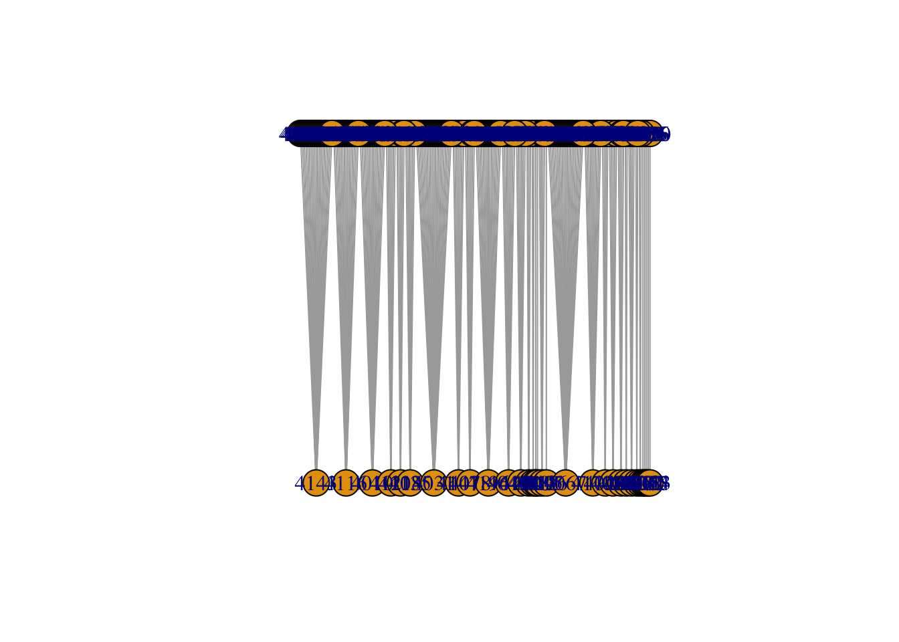

We’ve been working on a new framework for respresenting some evolutionary and genetics concepts in our twin stick shooter prototype. The idea is to create a 2 generation bipartite network that shows parents and offspring. Ultimately, we want it to be interactive (sorting, filtering, highlighting). I’m going to use some data from Project Hastur to try out some visualizations.
DATA DICTIONARY
I’m importing a single replicate from a larger experiment. The experimental conditions don’t particularly matter for this exercise but just in case you can find a more comprehensive description here.
Only 10000 observations of rncol(fulldata)` variables! I don’t need most of this information for this exercise. I’m going subset the data down to two generations (I’ll use 20 and 21, which is right in the middle of the run of 50 generations) and only keep the variables related to the pedigree plus Health for testing sort functions.
Code
Gen2021<-fulldata %>%filter(Generation>19& Generation<22) %>%select(Generation, ID, P1ID, P2ID, Health)Dictionary <-sumtable(Gen2021, out ="return", labels =TRUE, summ =c("min(x)", "max(x)", "notNA(x)"))Dictionary$Description <-c("Each wave of enemies is a generation","Unique key for each individual in the replicate","Value of `ID` for Parent 1","Value of `ID` for Parent 2","Essentially Hit Points")knitr::kable(Dictionary)
Variable
Min
Max
NotNA
Description
Generation
20
21
400
Each wave of enemies is a generation
ID
4000
4399
400
Unique key for each individual in the replicate
P1ID
3802
4196
400
Value of `ID` for Parent 1
P2ID
3802
4196
400
Value of `ID` for Parent 2
Health
5120
56372
400
Essentially Hit Points
VISUALIZATION
We need an adjacency matrix.
Code
library(igraph)edgep1<-Gen2021 %>%filter(Generation ==21) %>%select(ID, P1ID)mymat<-get.adjacency(graph.edgelist(as.matrix(edgep1), directed=FALSE))# Random bipartite graphinc <-as.matrix(edgep1)g <-graph.data.frame(inc, directed = F)V(g)$type <-V(g)$name %in% inc[,2] #the second column of edges is TRUE typplot(g, layout=layout_as_bipartite)

Source Code
---title: "VIZ EXPERIMENT 1"subtitle: "2 Generation Pedigree"code-fold: truecode-tools: true---# OVERVIEWWe've been working on a new framework for respresenting some evolutionary and genetics concepts in our twin stick shooter prototype. The idea is to create a 2 generation bipartite network that shows parents and offspring. Ultimately, we want it to be interactive (sorting, filtering, highlighting). I'm going to use some data from [Project Hastur](https://professorpolymorphic.github.io/PolymorphicWeb/Games/ProjectHastur/) to try out some visualizations.# DATA DICTIONARYI'm importing a single replicate from a larger experiment. The experimental conditions don't particularly matter for this exercise but just in case you can find a more comprehensive description [here](https://professorpolymorphic.github.io/RobisonWebSite/BCB520/posts/T4-BarriesData/).```{r}#| echo: false#| output: falsefulldata<-read.csv("KSC1.csv")library(tidyverse)library(ggplot2)library(dplyr)library(vtable)require(ggplot2)require(network)require(igraph)require(sna)require(ggnet)require(ergm)require(intergraph)require(RColorBrewer)glimpse(fulldata)```Only `r nrow(fulldata)` observations of `r `ncol(fulldata)` variables! I don't need most of this information for this exercise. I'm going subset the data down to two generations (I'll use 20 and 21, which is right in the middle of the run of 50 generations) and only keep the variables related to the pedigree plus Health for testing sort functions.```{r}Gen2021<-fulldata %>%filter(Generation>19& Generation<22) %>%select(Generation, ID, P1ID, P2ID, Health)Dictionary <-sumtable(Gen2021, out ="return", labels =TRUE, summ =c("min(x)", "max(x)", "notNA(x)"))Dictionary$Description <-c("Each wave of enemies is a generation","Unique key for each individual in the replicate","Value of `ID` for Parent 1","Value of `ID` for Parent 2","Essentially Hit Points")knitr::kable(Dictionary)```# VISUALIZATIONWe need an adjacency matrix.```{r}library(igraph)edgep1<-Gen2021 %>%filter(Generation ==21) %>%select(ID, P1ID)mymat<-get.adjacency(graph.edgelist(as.matrix(edgep1), directed=FALSE))# Random bipartite graphinc <-as.matrix(edgep1)g <-graph.data.frame(inc, directed = F)V(g)$type <-V(g)$name %in% inc[,2] #the second column of edges is TRUE typplot(g, layout=layout_as_bipartite)```